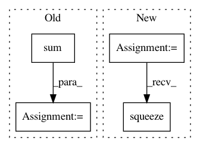

614c41e7f05d274991d95271c49a87af3fa2cf49,onmt/Loss.py,NMTLossCompute,compute_loss,#NMTLossCompute#Any#Any#Any#,150
Before Change
1 - self.label_smoothing)
target_.masked_fill_(mask, 0)
target_feed = target_
norm_ = self.normalizing * target.data.ne(self.padding_idx).sum()
loss = self.criterion(scores, target_feed)
loss_data = loss.data.clone() + norm_
After Change
gtruth = target.view(-1)
if self.confidence < 1:
tdata = gtruth.data
mask = torch.nonzero(tdata.eq(self.padding_idx)).squeeze()
likelihood = torch.gather(scores.data, 1, tdata.unsqueeze(1))
tmp_ = self.one_hot.repeat(gtruth.size(0), 1)
tmp_.scatter_(1, tdata.unsqueeze(1), self.confidence)
if mask.dim() > 0:
In pattern: SUPERPATTERN
Frequency: 3
Non-data size: 4
Instances
Project Name: OpenNMT/OpenNMT-py
Commit Name: 614c41e7f05d274991d95271c49a87af3fa2cf49
Time: 2017-12-22
Author: skywalker@postech.edu
File Name: onmt/Loss.py
Class Name: NMTLossCompute
Method Name: compute_loss
Project Name: maciejkula/spotlight
Commit Name: 70e4d7fe60a9658bb27b9f5fb67592a1222b2ec3
Time: 2017-07-06
Author: maciej.kula@gmail.com
File Name: spotlight/sequence/representations.py
Class Name: PoolNet
Method Name: user_representation
Project Name: masa-su/pixyz
Commit Name: ffbec3bf0ee5c2cfc3cc3b841e882a549f976bda
Time: 2019-04-21
Author: masa@weblab.t.u-tokyo.ac.jp
File Name: pixyz/flows/flows.py
Class Name: PlanerFlow
Method Name: forward